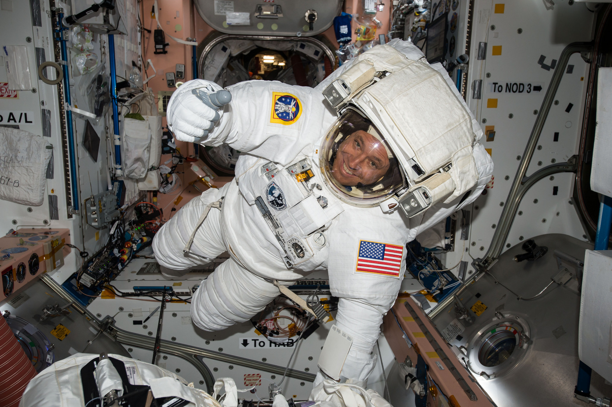
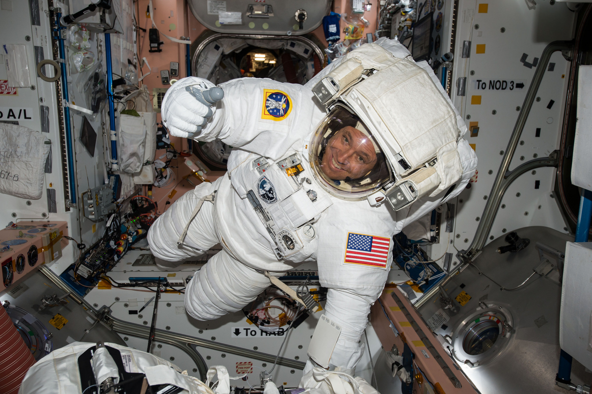

Solar System odyssey
Duration: 90 days
Embark on the ultimate adventure through our solar system, visiting key celestial bodies and experiencing the wonders of space travel. This once-in-a-lifetime journey includes:
Itinerary Highlights:
Launch and Low Earth Orbit (LEO)
Pre-flight training and safety briefings.
Experience a few days in low Earth orbit, enjoying breathtaking views of Earth and participating in zero-gravity activities.
The Moon
A 3-day stay at a lunar habitat, including guided tours of the Moon's surface.
Activities such as lunar rover rides and exploration of key landmarks like the Sea of Tranquility.
Mars
A 7-day journey to Mars, including a landing on the Martian surface.
Exploration of Mars' terrain, including the Valles Marineris canyon and Olympus Mons volcano.
Participation in scientific experiments and research activities.
Asteroid Belt
Guided tours of notable asteroids, including Ceres and Vesta.
Jupiter and Its Moons
A visit to Jupiter, with stunning views of its Great Red Spot and swirling clouds.
Exploration of its largest moons, including Ganymede, Europa, and Io, with opportunities for scientific research and observation.
Saturn and Its Rings
A breathtaking view of Saturn and its iconic rings.
Exploration of Saturn's moons, such as Titan, where participants can engage in research activities and enjoy the unique atmosphere.
Uranus and Neptune
A journey to the ice giants, Uranus and Neptune, with educational sessions on their unique characteristics and atmospheres.
Opportunities for scientific observation and data collection.
Return to Earth
A celebratory return journey to Earth, including a debriefing session to share experiences and findings.
A graduation ceremony with certificates of completion and commemorative souvenirs.
Package Inclusions:
All necessary training and safety briefings.
Accommodation in luxury space habitats and onboard the spacecraft.
Meals prepared by top chefs, featuring space-themed cuisine.
Professional photography and video documentation of the entire journey.
Access to exclusive lectures and workshops by astronauts and scientists throughout the trip.
Target Audience:
Space enthusiasts, adventure seekers, and those with a passion for science and exploration.
 
